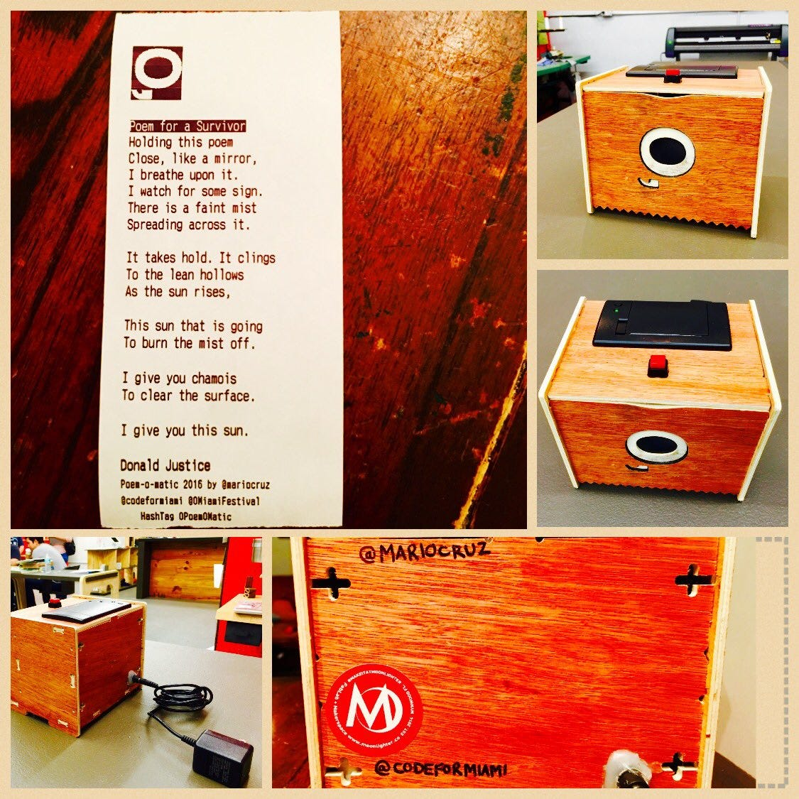

What
Poem-o-matic is a friendly "bot-in-a-box" that prints out a keepsake poem just for you when you press the button. We hope you'll snap an Instagram of your poem and share it with your social network.

Status
The very first (and at this time, only) Poem-o-matic was created for the 2016 O, Miami Poetry Festival at the Moonlighter Makerspace, where fine Miami nerds come together to make cool things.
Why
Poem-o-matic was created for the 2016 O, Miami Poetry Festival. The mission of the festival is for every single person in Miami-Dade County to encounter a poem during the month of April. O, Miami is a Knight Foundation-funded organization that expands and advances literary culture in Greater Miami, FL.
Who
Poem-o-matic is a project by Mario Cruz, with negligible spiritual support from Cristina Solana and Rebekah Monson. Ernie Hsiung assisted with the documentation.
How - Materials
- Raspberry Pi 2 or 3
- Breadboard
- Thermal Printer kit
- 6 Breadboard Wires
- A 10k resistor
Setup the Raspberry Pi
SSH into your Raspberry Pi or via monitor and keyboard open a terminal. Install the required files:
sudo apt-get update
sudo apt-get upgrade
# Install needed packages
sudo apt-get install python-dev
sudo apt-get install python-rpi.gpio
sudo apt-get install python-serial
sudo apt-get install python-imaging-tk
sudo apt-get install python-unidecode
sudo apt-get install gcc
# Give serial port permission
sudo usermod -a -G dialout pi
# Reboot
sudo shutdown -r nowSerial Port Configuration
Change the Pi serial port to prevent printer garbage on startup:
sudo nano /boot/cmdline.txtChange: console=ttyAMA0,115200 to console=tty1
Project Wiring
Connect the printer's TTL socket: black cable to GND, yellow to RX. Connect using pin #6 (Ground) and pin #8 (GPIO14).
Install from GitHub
sudo apt-get install git-core
git clone git://github.com/MarioCruz/PoemOMatic
# Test print
python test.pyNote: On the Pi3 the Serial Port is named "ttyS0" not "ttyAMA0". Update the code accordingly.
Connect the Switch
Connect one side of the push button to pin 14 GND. Connect the other side to pin 16 (GPIO 23). Also connect via a 10k ohm resistor to pin 1 (3.3V).
Auto-start on Boot
sudo nano /etc/rc.local
# Add before exit 0:
cd /home/pi/PoemOMatic
python upip.py
python GPIORUN.pyCustom Enclosure
I modified the box to be screwless and added the O'Miami logo using Adafruit IOT Printer box via Thingiverse as my starting source and cut it on Moonlighter's Wood CNC.
Updating Poems
Poems are stored in the PoemJson directory in JSON format. Use SFTP to upload new poems to the Raspberry Pi.
Related
-
Poetry Robots: From Poem-o-matic to Alphie 2.0
The full decade-long arc, with Poem-O-Matic at the start.
-
Poetry Phone — Part 4: Making It a Banana
The latest entry in the Poetry Robots series, eight years on.